Project 3 involved using homography transformations to warp images to different perspectives and create blended mosaics/panoramas of multiple images taken from different perspectives.
Part 1 involved taking the pictures to be used for the project. Multiple pictures were taken of the same scene but from different perspectives. All images of the same scene were simply rotated around the center of projection (i.e. the camera lens), and an overlap between the contents of each (adjacent) image was necessary to allow identification of correspondences.
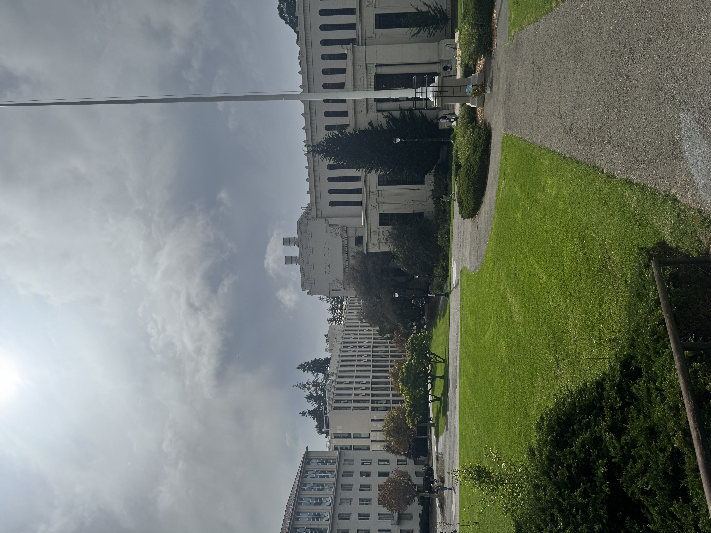
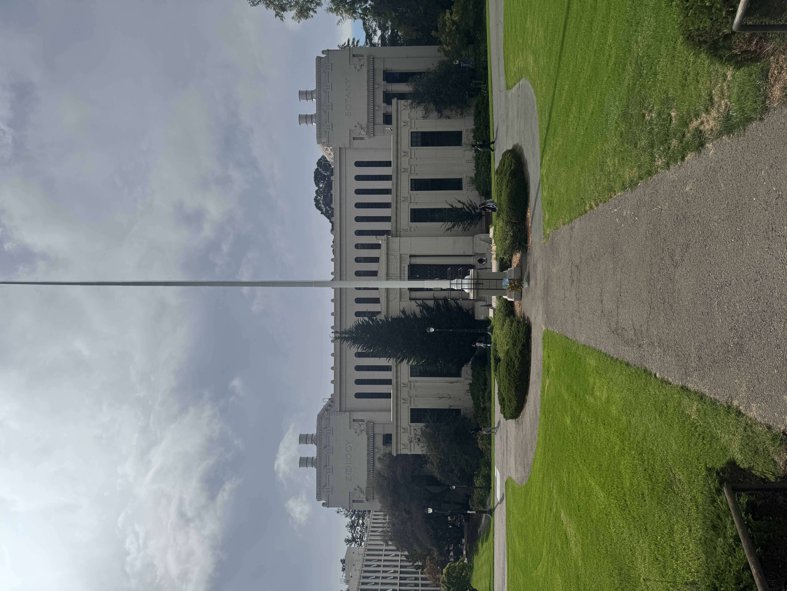
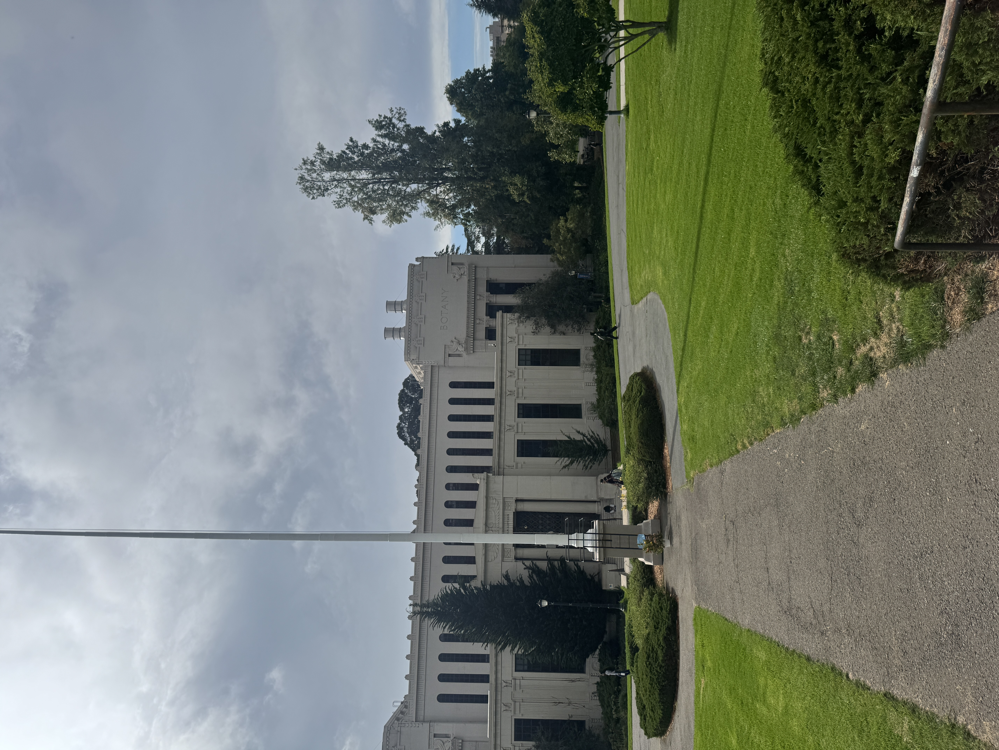
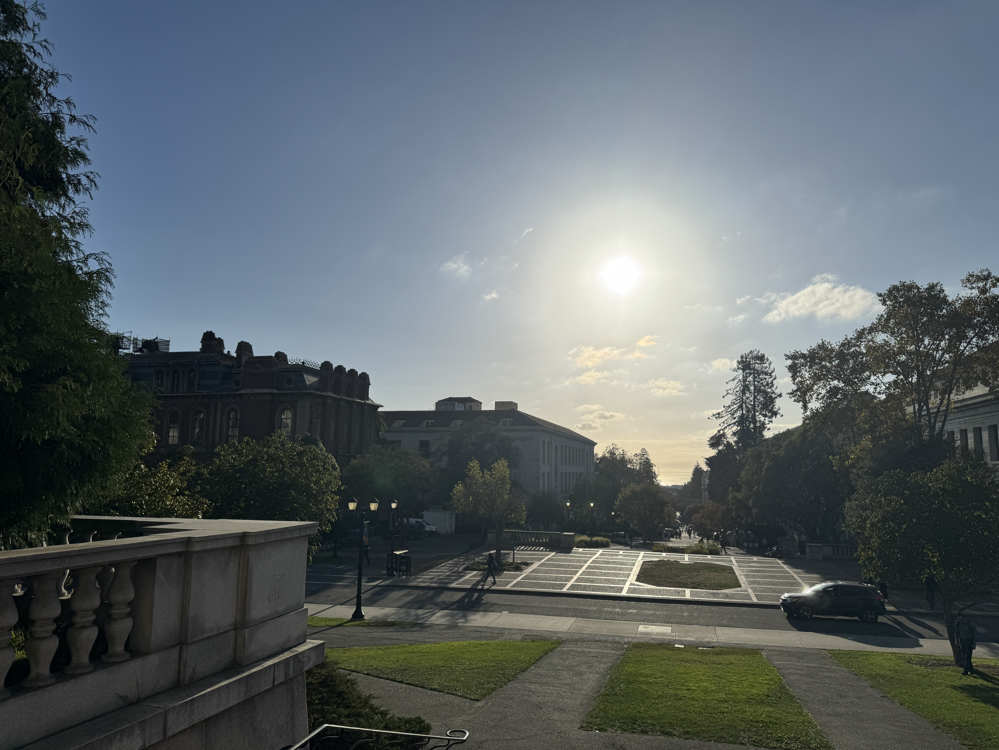
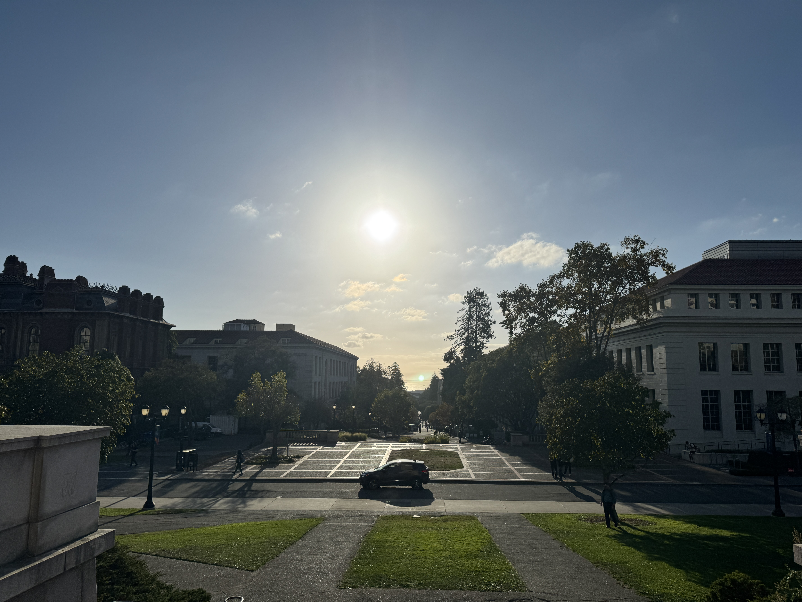
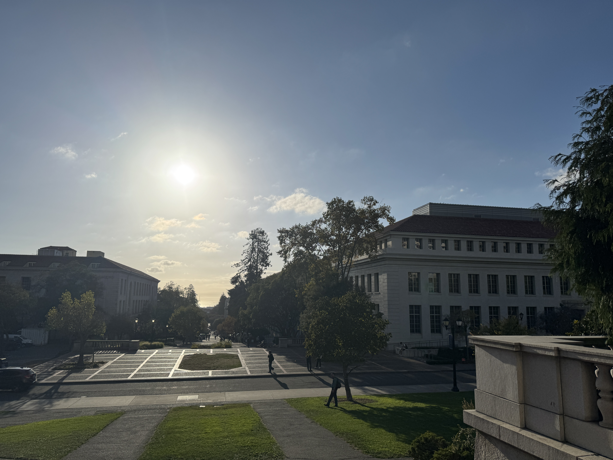
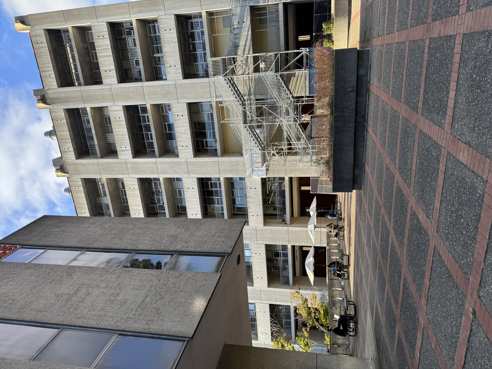
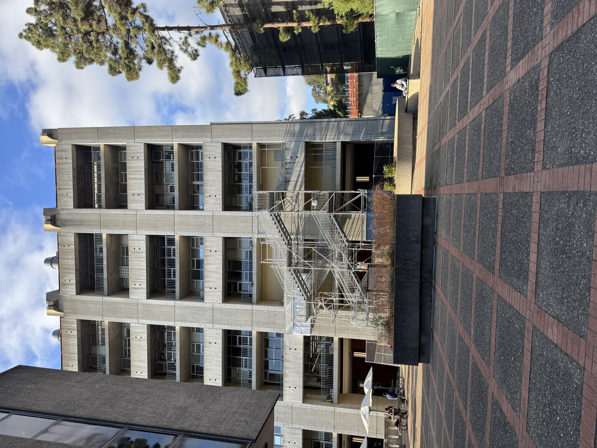
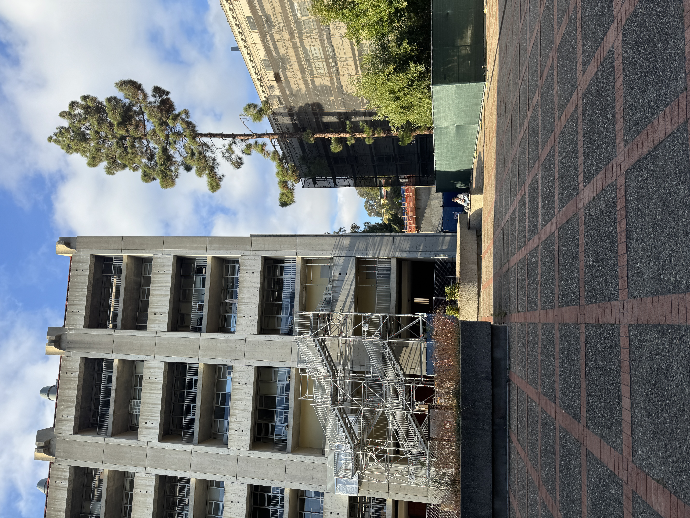
Part 2 involved implementing the algorithm to actually calculate the homography transformation matrix H from 2 sets of corresponding points between two images. Correspondences were identified manually using a tool that allows the user to click on points that correspond to one another in two images. With a list of at least 4 non-degenerate correspondences, there is sufficient information to calculate the homography matrix by solving a system of n linear equations in the matrix form Ah=y where n is the number of correspondences, A is an n*8 matrix containing correspondence data, h is the 8*1 flattened homography matrix (with the 9th "scale" degree of freedom fixed at 1), and y is an n*1 matrix containing correspondence data. Supplying only 4 correspondences means the system is very sensitive to minor changes in input, so to allow for more than 4 correspondences to be used (i.e. an overdetermined system), we solve the system of equations using least squares linear regression.
Below is a pair of images with their correspondences labeled, followed by the final H homography matrix and the matrix representation of the system of linear equations solved (with least squares) to obtain it (from the correspondences).
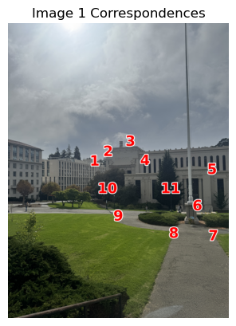
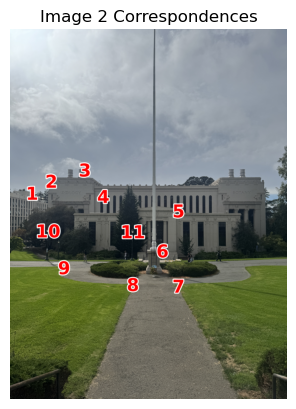
Part 3 involved implementing the actual warping of the images. This was done using inverse warping where each pixel coordinate in the output image was mapped to a pixel coordinate in the input image using the inverse of H. To interpolate pixel values (i.e. to map to a discrete pixel coordinate in the input image), two algorithms were implemented: nearest neighbor and bilinear. Nearest neighbor simply rounds to the nearest pixel whereas bilinear calculates a local linear approximation of the the output pixel value from the nearest 4 input pixel values.
Below are 2 images that were taken at an angle and rectified using inverse warping with both nearest neighbor interpolation and bilinear interpolation. Both interpolation algorithms are shown for comparison.
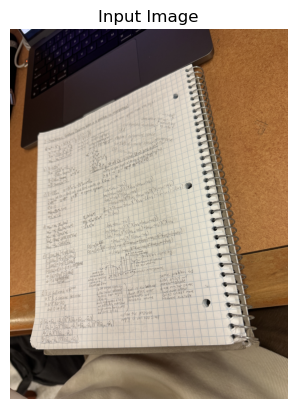
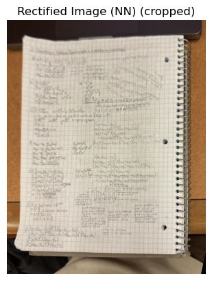
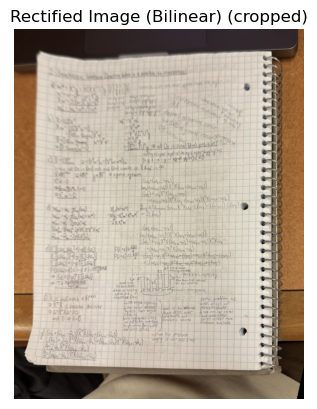
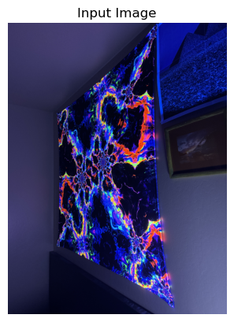
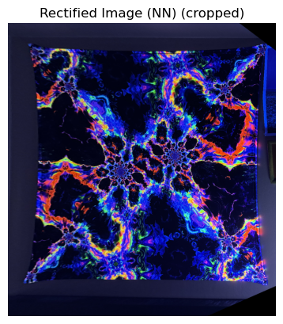
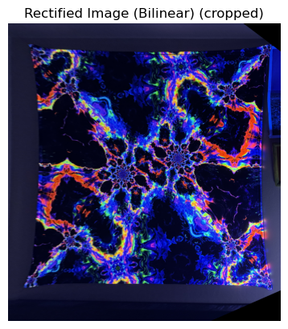
Part 4 involved using parts 2 and 3 to warp multiple images into alignment to create a mosaic/panorama effect. The images were also blended to hide edge artifacts. A distance transform is used to generate the masks used to blend the images more smoothly. A single canvas shape is generated from each image's dimensions and H matrices before the images are transformed to preserve the translations and scaling in the final panorama.
Below are 3 examples of images combined with the panorama effect.
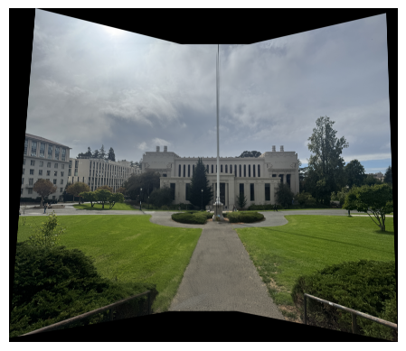
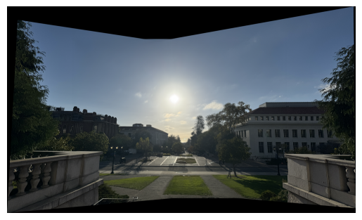
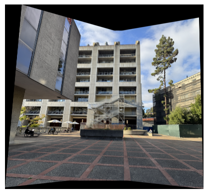